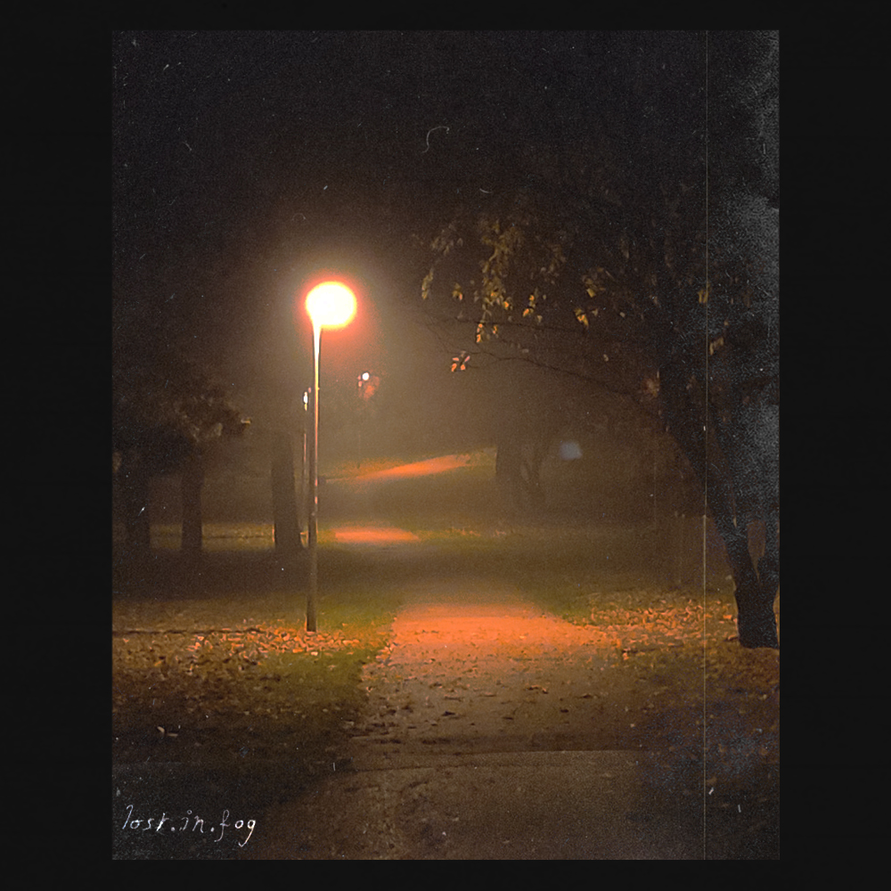
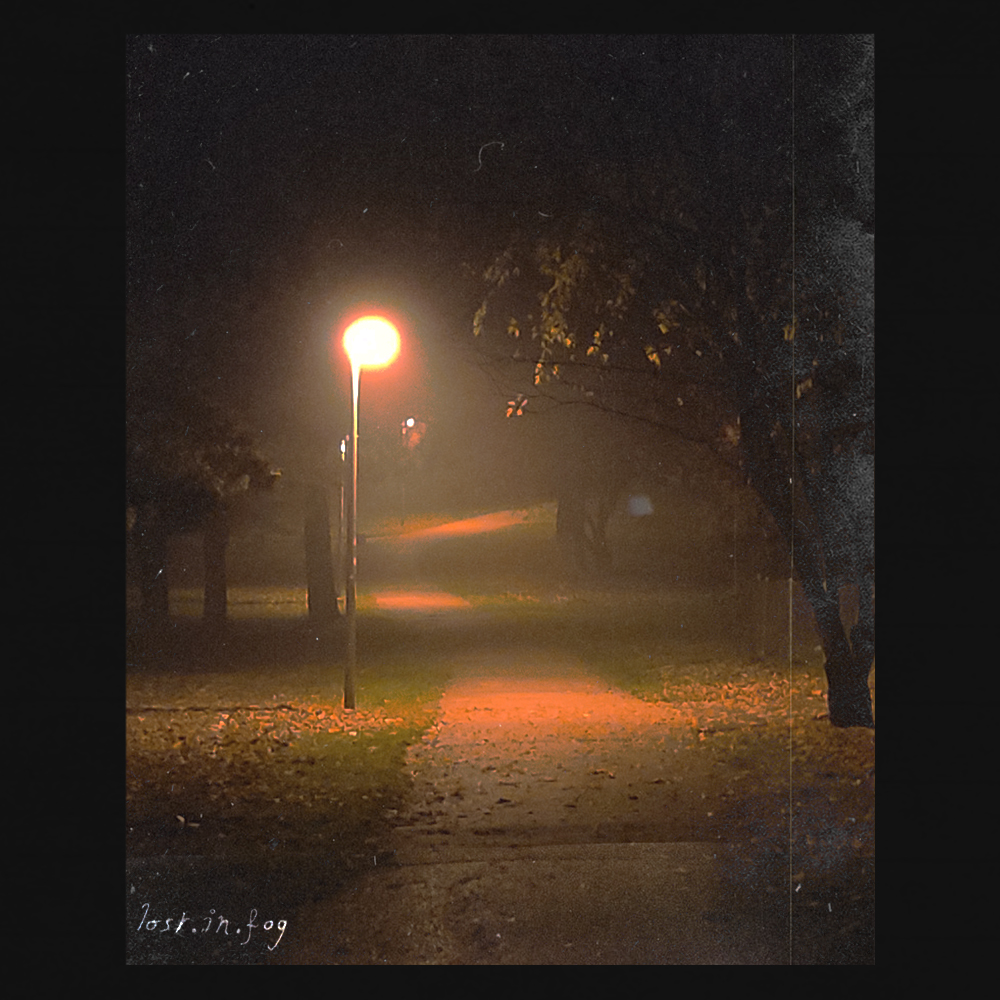

Lost.in.fog


Dead Flowers:
C'est commun, c'est universel, mais c'est toujours triste de voir autant
d'être vivant périr par le simple faite d'être résigné à subir le temps. C'est comme tout, chacun y passe et
chaque jour, des choses simples de la vie nous l'apprennent.
Oh hi smokers:
Ce n'est pas parce que la plupart des gens on ne serait-ce qu'un point commun
qu'ils sont faits pour s'entendre. Plein de personnes aime le monde de la nuit. On en profite tous différemment.
Le seul moment où on se retrouve. c'est vers les cendriers.
Summer night:
C'est agréable, c'est cet endroit qu'est agréable. Une nuit d'été, sans intempérie;
une sortie de village aux champs assortis. Penser à la nuit, celle que tu remercieras pour ce temps passé à lire dans tes pensées.
H.ill:
Le vent, elle le connaît dans tous ses états, mais elle ne bouge pas, elle ne bougera jamais, elle n'en a pas besoin.
Admirez-la, elle vous inspirera lors des tempêtes.
...........................
 


Fear:
Se réveiller sans aucun repère. Les seules choses habituelles que je ressens sont
mes angoisses qui se battent dans l'entièreté de mon corps. Les voir se matérialiser. Perdre le son de sa voix;
le toucher de ses membres. Avoir plus que l'ouïe et la vue pour regarder ce qui nous hante.
Lights:
Une série de lumières. C'est rassurant mais, ce n'est qu'une parcelle entre deux mondes vêtuts
d'ombre. Marcher, marcher tant qu'on le peu. Espérer atteindre son but, ne pas savoir ou il se cache. Suivez votre instinct.
........
Last street lamp:
On en revient à une forme sécurité sauf bien plus courte. Est-ce une ruse, un appât ?
Je ne sais plus quoi suivre, quoi faire. Je sais pertinemment que mes prochains pas ne seront pas avant un moment.
Faites-moi un signe.
.............
A mess of light:
Lumières, encore des lumières. Je pense que le chemin était bon. ces lumières désordonnées
bien qu'elle ne soit pas forcément très lumineuse, offrent une visibilité globale. Malheureusement je suis fatigué. Mes paupières tombent.
Réveillez-moi en terre saine.